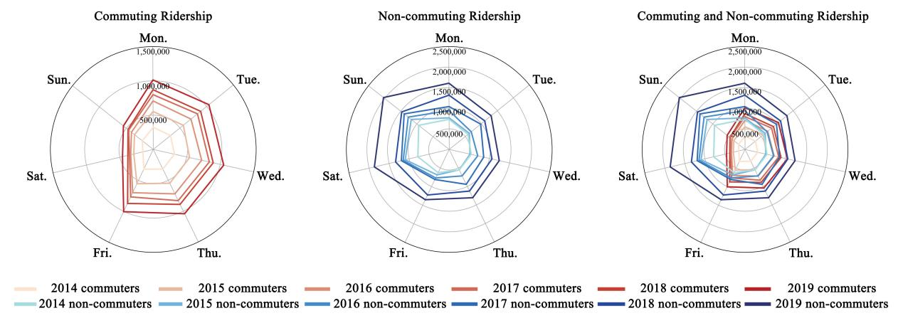
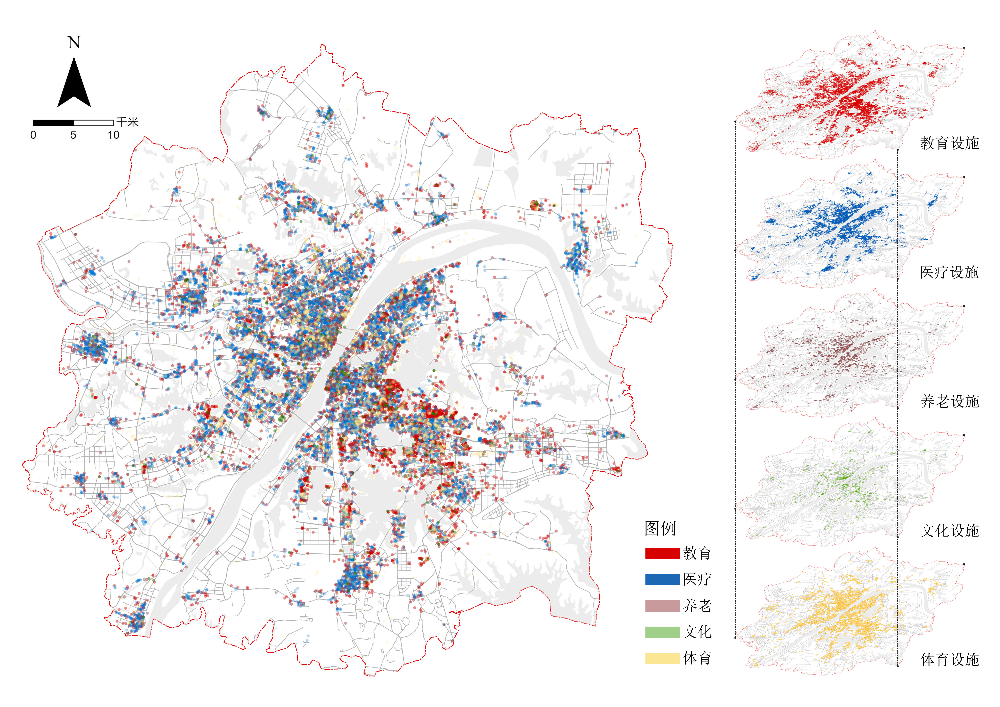

Urban Research
数据研究
从城市交通记录、空间设施数据与视觉语言模型中识别规律，为真实场景提供可解释的分析依据。
千万级地铁刷卡记录处理
VLM道路要素自动提取
K-means / GMM行为识别与动态建模
基于视觉语言模型的道路要素自动提取
基于激光点云数据与 Qwen 等视觉语言模型，完成道路边界线与路口区域的自动化提取。主要参与模型训练，采用监督微调（SFT）对基础模型进行冷启动预热，并引入 GRPO 算法持续优化模型表现。
方法与优化重点：
- 面向激光点云数据构建道路边界线与路口区域识别任务
- 使用 SFT 对基础视觉语言模型进行冷启动预热
- 引入 GRPO 算法优化复杂场景下的模型推理表现
- 设计涵盖格式约束、路口几何特征与召回率等维度的复合奖励函数
- 提升道路中心线与路口区域识别结果的平滑度和稳定性
大规模数据处理与人群行为分析能力
能够处理千万级别的地铁刷卡数据，使用代码自动构建每日出行OD链路，并通过空间规律性、时间稳定性和出行频率等指标对乘客进行精细化分类。 熟练应用聚类算法（如 K-means）和动态面板 GMM 模型，挖掘乘客出行的时空特征及长期行为规律，为城市交通流量预测和运营优化提供科学依据。

基于POI与缓冲区的设施数据库构建与空间分析能力
能够利用高精度 POI 数据（餐饮、企业、商业、文化、医疗等）建立系统化设施数据库，并结合 800 米缓冲区进行空间匹配和统计分析。 为商业选址、客流分析和城市规划决策提供数据支撑。

科研方法与策略优化能力，支持产品或运营决策
熟悉科学研究方法，包括多变量回归分析、时空动态建模、内生性处理等，能够定量评估网络扩张、设施布局和人口分布对不同类型出行需求的影响。 能够将研究成果转化为运营策略建议，例如通过合理规划商业设施和交通节点位置来提高客流量和用户体验，为大数据驱动的产品运营或城市交通决策提供价值。